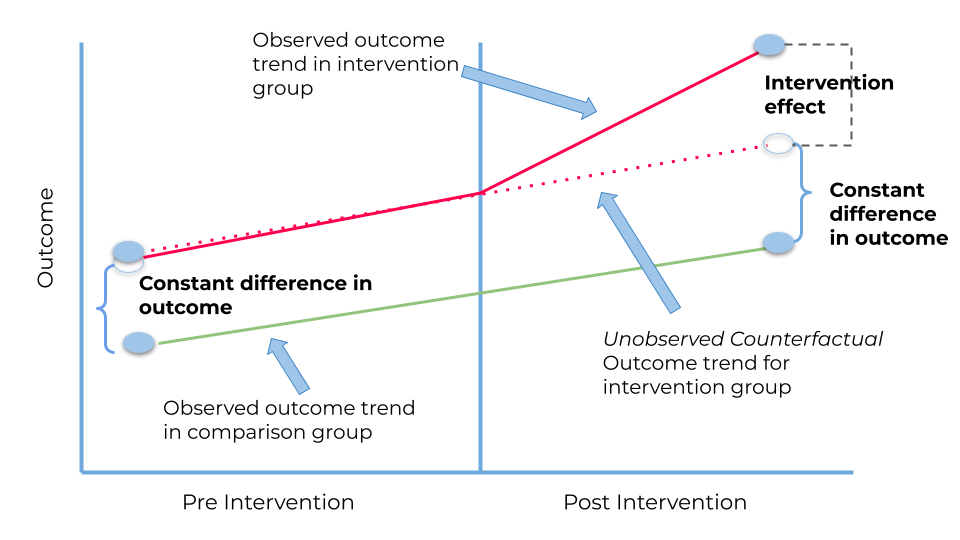

Week 13 Lab: Introduction to Panel Data Analysis

This Lab Contributes to Course Objectives: 1, 3, 4, 5, 7, 8
Learning Objectives Tableau
Create visualizations for DiD analyses that account for:
Treatment and control groups
Staggered treatment times
Create visualizations for panel data analysis:
Maps and pages
Visualizing temporal variation
Tableau
Panel data is a type of longitudinal data that involves the collection of observations on the same individuals or units over time. This makes panel data different from cross-sectional data, which involves the collection of observations on different individuals or units at a single point in time, and time series data, which involves the collection of observations on the same variable over time.
The objective of this lab is to show you how to create effective visualizations for your panel data analysis. We have touched on how to create all of these visualizations in prior labs, so today our focus will be less on the procedures for creating visualizations and more on ideas for tailoring these vizzes to panel data.
Difference in differences
The classic DiD visualization looks something like this:

Or this:

By now you are all well equiped to create these line graphs in Tableau, but there are two nuances to creating these that are worth discussion.
Treatment and Control Groups
Let’s connect to the minimum wage and employment dataset you used in lab last week – min_wage_data.csv. Notice that there is already a variable called treat and recall that this variable is equal to 1 if the county is in a state with a minimum wage increase and 0 otherwise.
Create a line graph that shows logged employment in treated and non-treated states. (Hint: use the
treatfield to assign colors to your lines.)Are there any meaningful differences in average employment across treated and non-treated areas?
Staggered Treatment Times
Now recall that different states implemented minimum wage increases at different points in time. What variable could we use to see if effects of the minimum wage increases are more apparent if we separate treated units by the timing or type of treatment? Create a line graph that shows logged employment by the treatment timing.
A downside to line graphs is that they don’t capture variation in employment well. Let’s try creating box and whisker plots so that this variation is more clear. Open a new sheet, select
yearandLempand go toShow Me-> Box and whiskerChange
Lempto aDimension, then dragyearto columns shelf and assign it asDiscrete.Note that box and whisker plots show the median of the distribution, but we might also be interested in the means. How can you overlay this box and whisker plot with a line that shows the average value of
Lemp?Finally, let’s do this separately by treatment year. Drag
First.Treatto thePagescard and change it to a dimension. Note that the title of your worksheet can now automatically change as you change pages. Let’s change the title to readDistribution of Annual Employment For States with <Page Name>, then let’s edit the aliases of the First.Treat variable to be more useful for this title. We can change 0 to sayNo Minimum Wage Increase, 2004 to sayMinimum Wage Increase in 2004, etc.
Fixed effects with marginal changes
This section will cover how to visualize changes in variables over space and time. We will use the fires and weather data you used in last week’s lab. You can download the data from this folder. The folder contains two files: 1) fires_303.csv.gz and 2) weather_303.csv.gz. fires_303.csv.gz contains three variables: 1) a unique county identifier, county_fips, 2) the observation date measure_date, and 3) the number of wildfire burning on that date in that county, fires. weather_303.csv.gz contains the same county and date information along with 1000-hour fuel moisture measured in percent from 1 to 40.1
Maps with Pages (visualizing spatial data over time)
Connect to the fires dataset and create a map that shows the total number of fires in each county. Now assign the Year variable as your pages and give your map a useful title (that changes with the year).
Note that you might want to play with different maximum values of your fires variable so that differences across time are more apparent. Try this now by going to Color -> Edit Colors -> Advanced -> and choose a reasonable top copding value.
Lines with Distributions (visualizing heterogeneity over time)
Create a line graph that shows average fires across years in the sample.
Next, create a new variable that counts the total number of (logged) fires in a county each year by creating a new calculated field called Total Fires using the equation {FIXED [year],[county_fips]: SUM(LN([Fires]))}.
Create a circle plot of this variable by dragging it to the rows shelf to the right of avg. fires. Drag the total fires varaible again to the Size icon, and change it to count. You should now have circles that reflect the number of counties with the indicated number of fires. You may want to filter on this variable to remove the large number of zeros.
Summary
This lab covered different ways of visualizing panel data. There are of course many other avenues you can take to visualize your data and I encourage you to think outside the box for your final project. Dream of your ideal visualization and I can probably help you put it together!
Footnotes
1000-Hour Fuel Moisture (1000-hr FM) represents the modeled moisture content in dead fuels in the 3 to 8 inch diameter class and the layer of the forest floor about four inches below the surface. The 1000-hr FM value is based on a running 7-day computed average using length of day, daily temperature and relative humidity extremes (maximum and minimum values) and the 24-hour precipitation duration values. Values can range from 1 to 40 percent (source).↩︎